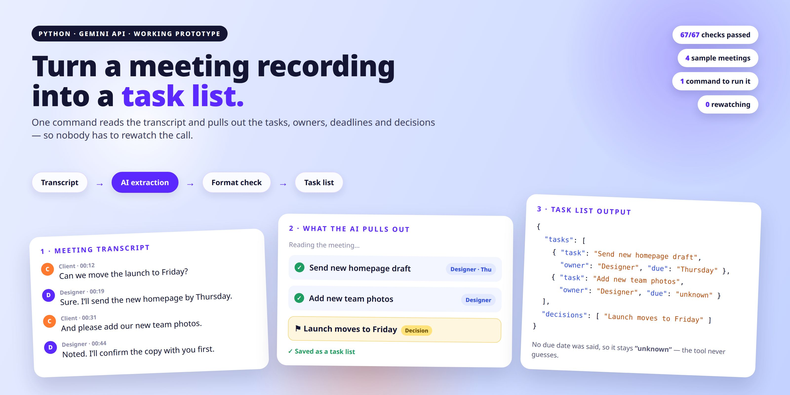
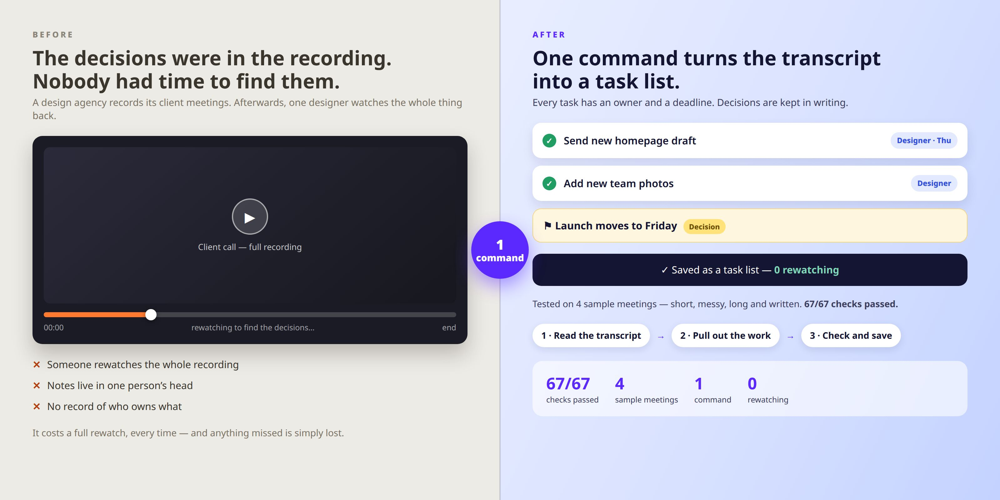
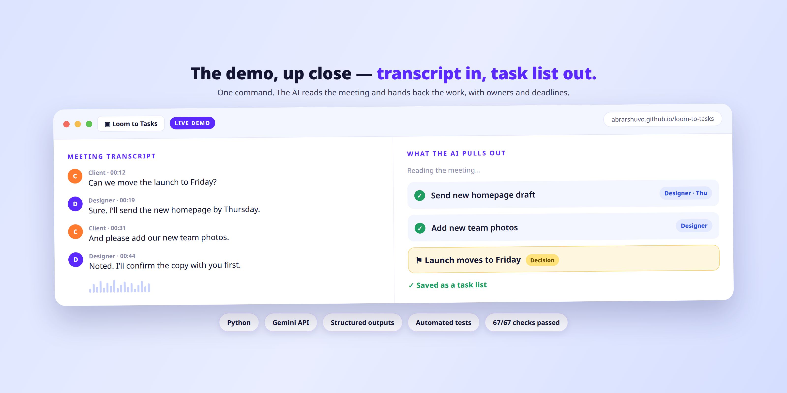
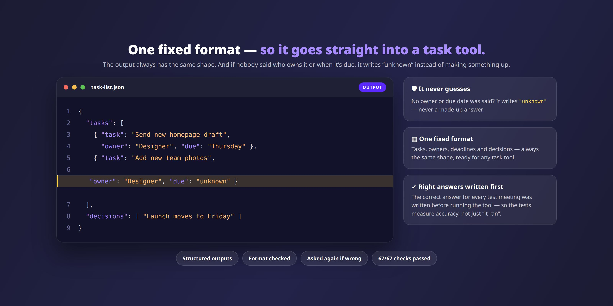
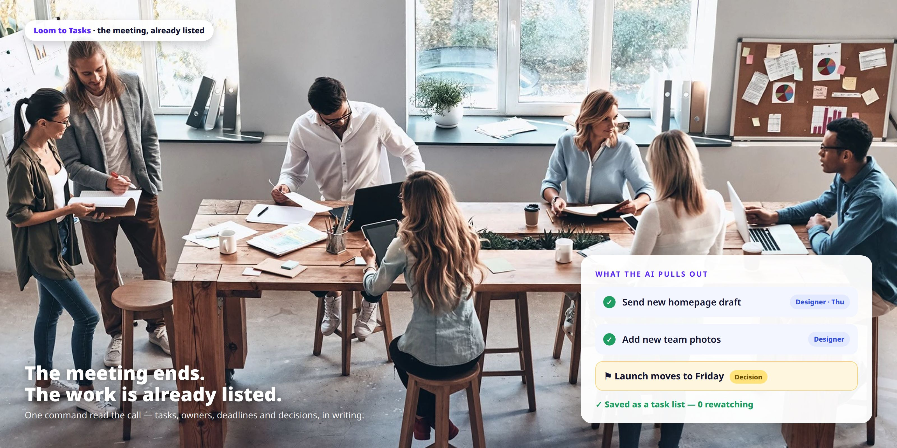
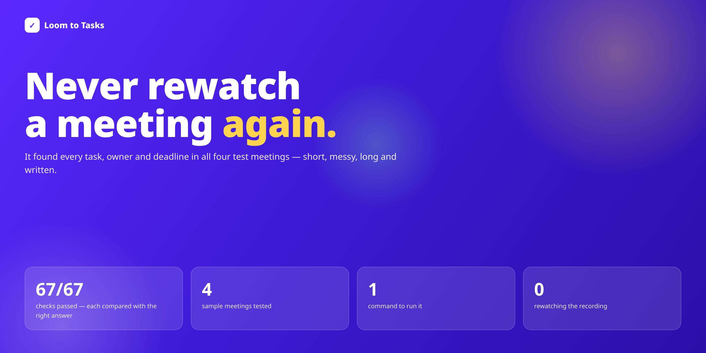
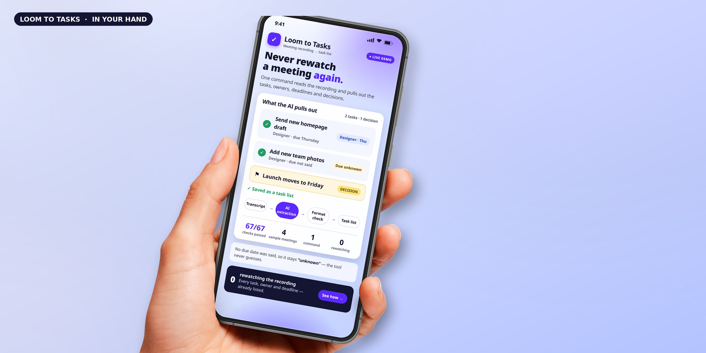

Loom to Tasks
A Python tool that reads a recorded meeting and turns it into a clear list of tasks, owners, deadlines and decisions, so nobody has to rewatch the call.
Who this is for: design agencies and teams that record client meetings and lose track of what was decided.
The decisions were in the recording. Nobody had time to find them.
A design agency records its client meetings. Afterwards, one designer watches the whole recording, writes down what the client asked for and passes it on. It works, but it costs a full rewatch every time, and anything missed is simply lost.
Three steps
Read the transcript
The tool cleans up the transcript and splits it into who said what, and when.
Pull out the work
AI picks out the tasks, owners, deadlines and decisions, and has to answer in one fixed format.
Check and save
Every answer is checked against that format, asked again if it’s wrong, then saved as a task list other tools can read.
Built to be relied on
It never guesses
If nobody said who owns a task or when it’s due, it writes “unknown” instead of making something up.
One fixed format
The output always has the same shape, so it can go straight into a task tool.
Right answers written first
I wrote the correct answer for every test meeting before running the tool, so the tests measure accuracy, not just “it ran”.
It found every task, owner and deadline in all four test meetings.
Tested on sample meetings with answers prepared in advance. Real client meetings are the next step.
Screens
The case, in pictures
The whole story, picture by picture — the problem, the demo, the output, and the result.







More projects
Other things I’ve built — scroll through the rest.


Want something like this?
Tell me about your project. I reply within one working day.